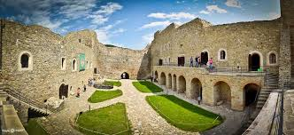
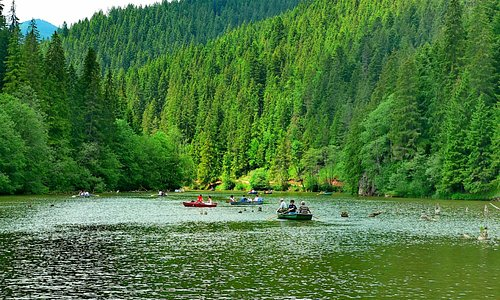
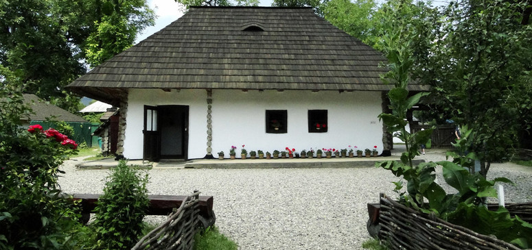

The Red Lake is located between Suhardul Mic, Suhardul Mare on the north side, Southwest Podu Calului Mountains, Licaș Mountains and Kis-Havas Mountains in the northwest, Csíki-Bükk in the north-east and Muntele Ucigaș (The Killer Mount) in the eastern part. The lake is powered by four large streams and 12 temporary water courses, of which the most important are Verescheul (The Red), Licaş, Suhardul, Ucigașul(The Killer). Although the Red Lake is a young formation, the conditions and time of the lake formation are very much discussed. During the forming, the lake area was a hardly accessible area, economically unexplored. According to Franz Herbich, Red Lake was formed in 1838. This is also justified by the earthquake of January 23, 1838, which was repeated in February and could have caused a landslide. Another year of forming is 1837, which can be argued by very violent storms and heavy rains. About this period writes Ditrói Puskás Ferenc in his work, "The History of Borsec". It is essential that the lake was formed by moving the clay mass deposited during the last ice age on the north-western slope of Mount Ghilcoş. Soon after the valley had been closed, the fir forest was flooded, and the trees were petrified, giving a rare peculiarity to the whole landscape. In the first years of forming, the lake has expanded further - about a kilometer higher in the valley of the stream, but over time the natural dam eroded, the water level stabilizing at the current level.

2. Piatra Neamt
Originally a market town, hence its name, it had an important role in Moldavian culture. It was first mentioned in a late-14th century document. The name neamț is a generic name of Slavic origin for the German people in the Romanian language. This has led to speculation of a German foundation of Târgu Neamț, according to which Saxon colonists crossed the Carpathians from the Bistrița area and built a commercial township. Some Romanian historians, including B. P. Hașdeu consider that Târgu Neamț was probably a German settlement from the 13th century, when the Teutonic Order made incursions from Transylvania against the Cumanic peoples that were living in Moldavia.
Main attraction: Neamt Citadel
Lack of reliable information on the origins of Neamț Fortress had resulted in several hypotheses whose reliability was often questioned. A number of historians and philologists, as A.D. Xenopol, B.P. Hasdeu, D. Onciul consider that - according to the papal bull of 1232 - the Teutonic Knights of Bârsa had built between 1211–1225 on the eastern slope of the Carpathians a castrum muntissimum which was later identified as the citadel. The Germanic (Teutonic or Saxon) hypothesis was acquired by many of Romanian historians and sustained by both: -the site's onomastic "Neamt", which in Slavonic and Rumanian languages means " German" -and by the fortification style, typical to Imperial German military architecture of Hohenstaufen period XII-XIV centuries. The German knights "the Saxons" have been appointed to fortify the Carpathian passes against the frequent barbarian incursions into Transilvania. The Saxons have been settled in Transilvania (Siebenbürgen- seven castles) since then, 150 years before the founding of later principalities of Valachia and Bogdania(Moldova). Archaeological research of the citadel has not revealed any evidence of a fortification before the reign of prince Peter II (1375-1391) & oldest coins discovered on the site are from the same reign. The name might be related with the name of the district and later county of Neamț where later Saxon colonists settled in the nearby town of Baia.
3. Memorial House of Ion Creanga
In this beautifully restored house, the famous Romanian story-teller Ion Creangă (1837 – 1889) was born and spent his childhood. The small house has two very small rooms and a porch which now is the resting place for the sun loving geraniums as you can see in the photos. Humulești is now part of Târgu Neamț, but back in the days it used to be a separate village. Ion Creangă is known by all Romanians who read his stories, especially the ones that made him famous: Childhood Memories. For those who read these stories this house and its surroundings is a very special place since almost all the stories happen right here, in the ex-village of Humulești.
 
<---------------------------- Red Lake
Memorial House of Ion Creanga ---------------------->